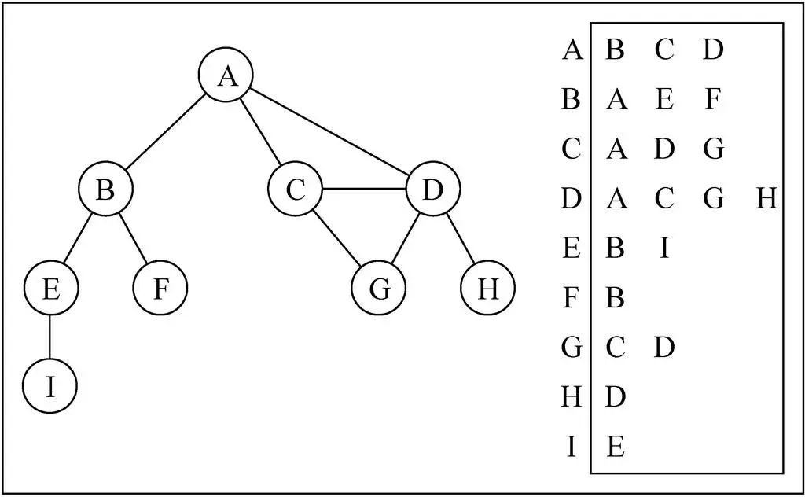

图
- 在数学的概念上, 树是图的一种.
村庄间的关系网
图的特点
- 一组顶点：通常用 V (Vertex) 表示顶点的集合
- 一组边：通常用 E (Edge) 表示边的集合
- 边是顶点和顶点之间的连线
- 边可以是有向的, 也可以是无向的.(比如A — B, 通常表示无向. A –> B, 通常表示有向)
图的术语
把上面的村庄图进行抽象
- 顶点
- 图中的一个结点
- 多个村庄中的某个村庄
- 边
- 表示顶点和顶点之间的连线
- 两个村庄之间的连线
- 0 - 1有一条边, 1 - 2有一条边, 0 - 2没有边
- 相邻顶点
- 由一条边连接在一起的顶点称为相邻顶点
- 比如0 - 1是相邻的, 0 - 3是相邻的. 0 - 2是不相邻的
- 度
- 一个顶点的度是相邻顶点的数量
- 比如0顶点和其他两个顶点相连, 0顶点的度是2
- 比如1顶点和其他四个顶点相连, 1顶点的度是4
- 路径
- 路径是顶点v1, v2…, vn的一个连续序列, 比如上图中0 1 5 9就是一条路径
- 简单路径: 简单路径要求不包含重复的顶点. 比如 0 1 5 9是一条简单路径.
- 回路: 第一个顶点和最后一个顶点相同的路径称为回路. 比如 0 1 5 6 3 0
- 无向图
- 上面的图就是一张无向图, 因为所有的边都没有方向.
- 有向图
- 有向图表示的图中的边是有方向的.
- 无权图
- 上面的图就是一张无权图(边没有携带权重)
- 带权图
- 带权图表示边有一定的权重.
- 里的权重可以是任意你希望表示的数据: 比如距离或者花费的时间或者票价.
图的表示
一个图包含很多顶点, 另外包含顶点和顶点之间的连线(边), 这两个都是非常重要的图信息, 因此都需要在程序中体现出来
邻接矩阵
- 邻接矩阵让每个节点和一个整数向关联, 该整数作为数组的下标值.
- 我们用一个二维数组来表示顶点之间的连接

- 图片解析
- 在二维数组中, 0表示没有连线, 1表示有连线.
- 通过二维数组, 我们可以很快的找到一个顶点和哪些顶点有连线.(比如A顶点, 只需要遍历第一行即可)
- A - A, B - B(也就是顶点到自己的连线), 通常使用0表示
- 问题
- 如果图是一个稀疏图那么矩阵中将存在大量的0，那么矩阵中将存在大量的0
邻接表
- 邻接表由图中每个顶点以及和顶点相邻的顶点列表组成.
- 这个列表有很多中方式来存储: 数组/链表/字典(哈希表)都可以.

要表示和A顶点有关联的顶点(边), A和B/C/D有边, 那么我们可以通过A找到对应的数组/链表/字典, 再取出其中的内容就可以啦
问题
- 邻接表计算”出度”是比较简单的(出度: 指向别人的数量, 入度: 指向自己的数量)
- 邻接表如果需要计算有向图的”入度”, 那么是一件非常麻烦的事情.
- 它必须构造一个”“逆邻接表”, 才能有效的计算”入度”. 而临街矩阵会非常简单
图的遍历
- 有两种算法可以对图进行遍历
- 广度优先搜索(Breadth-First Search, 简称BFS)
- 深度优先搜索(Depth-First Search, 简称DFS)
- 两种遍历算法, 都需要明确指定第一个被访问的顶点.
广度优先搜索
- 广度优先算法会从指定的第一个顶点开始遍历图, 先访问其所有的相邻点, 就像一次访问图的一层.
- 就是先宽后深的访问顶点

深度优先搜索
- 深度优先搜索算法将会从第一个指定的顶点开始遍历图, 沿着路径知道这条路径最后被访问了.
- 接着原路回退并探索吓一条路径.

图的封装
定义字典类型
1 | // 创建字典的构造函数 |
创建图类
1 | function Graph() { |
添加方法
1 | // 添加点的方法 |
测试代码
1 | // 测试代码 |
toString方法
1 | // toString方法（alert的时候会找toString方法，如果不写就去原型链找，就是[Object,Object]） |
遍历
- 两种算法的思想:
- 广度优先: 基于队列, 出队列的时候记录.
- 深度优先: 基于栈/队列, 入栈/队列时候记录
- 为了记录顶点是否被访问过, 我们使用三种颜色来反应它们的状态
- 白色: 表示该顶点还没有被访问.
- 灰色: 表示该顶点被访问过, 但并未被探索过.
- 黑色: 表示该顶点被访问过且被完全探索过.
初始化颜色代码
1 | // 广度优先算法 |
广度优先
- 创建一个队列Q.
- 将v标注为被发现的(灰色), 并将v将入队列Q
- 如果Q非空, 执行下面的步骤:
- 将v从Q中取出队列.
- 将v标注为被发现的灰色.
- 将v所有的未被访问过的邻接点(白色), 加入到队列中.
- 将v标志为黑色.
1 | // 广度优先算法（v：起始点，从哪里开始遍历；handler：处理方法） |
深度优先
- 遍历A的相邻节点BCD
- 遍历B的时候递归遍历B的子节点EF
- 所以C要等到B遍历后才能开始遍历C
1 | // 深度优先搜索 |